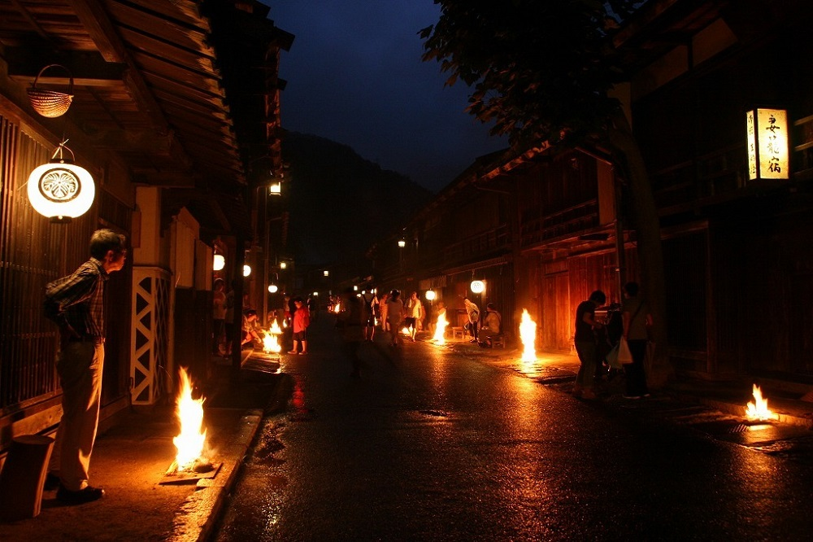

Yasumi do Obon
O yasumi (férias ou folga) de agosto no Japão refere-se principalmente ao Obon (O-bon), período tradicional de homenagem aos antepassados que ocorre de 13 a 16 de agosto, além do feriado nacional do Dia da Montanha (Yama no Hi) em 11 de agosto.O Período de ObonDatas principais: 13 a 16 de agosto (embora algumas regiões o celebrem em julho).Significado: Festival budista para receber e honrar os espíritos dos ancestrais.

Tradições:Limpeza de túmulos e acendimento de lanternas de boas-vindas (mukae-bon).Danças folclóricas conhecidas como Bon Odori ao redor de uma estrutura de madeira (yagura).Funcionamento do comércio: Não é um feriado nacional oficial, mas muitas empresas, fábricas e consultórios fecham por alguns dias (o chamado Obon yasumi), gerando grande tráfego de viagens de férias de verão.
Outras Datas em AgostoDia da Montanha (Yama no Hi): Feriado nacional fixado em 11 de agosto, dedicado a celebrar e apreciar as montanhas da natureza.
Bon Odori (盆踊り)
O Odori (dança folclórica) teve início há centenas de anos como atos religiosos e espirituais. Hoje em dia, ele é amplamente praticado nas noites de Obon.
Geralmente, as danças são realizadas em locais como parques, jardins, santuários e templos, onde a maioria das pessoas vestem yukata (kimono de verão) e movimentam-se ao som dos taikos.